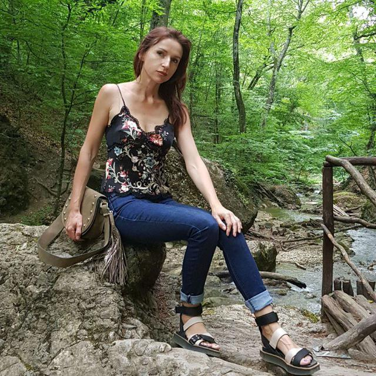
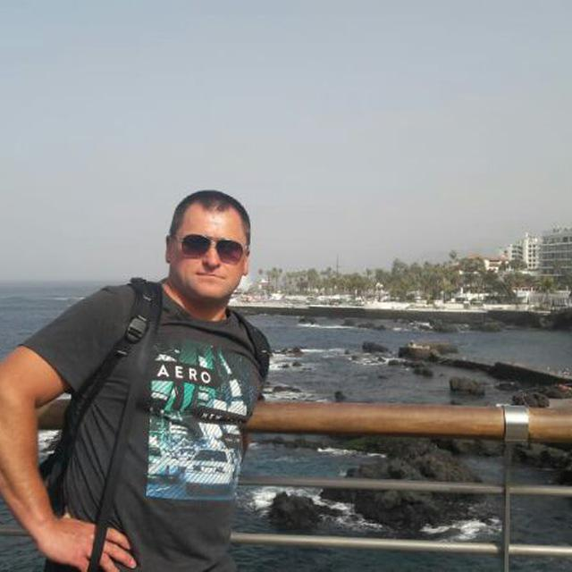
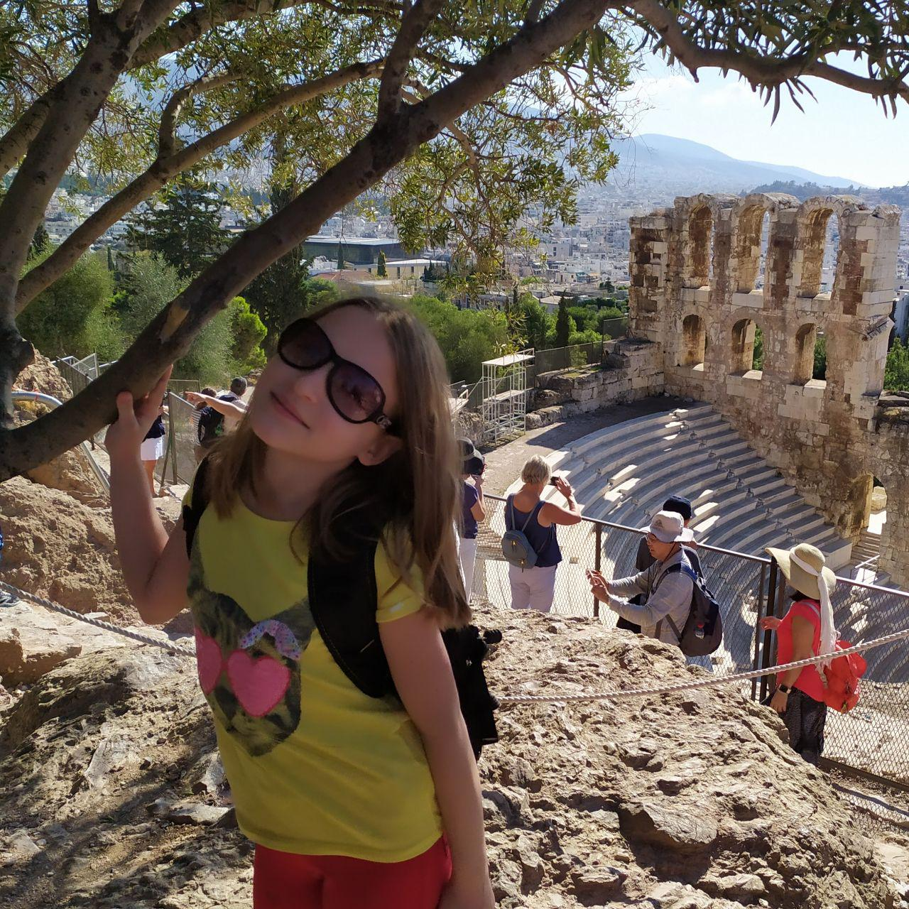
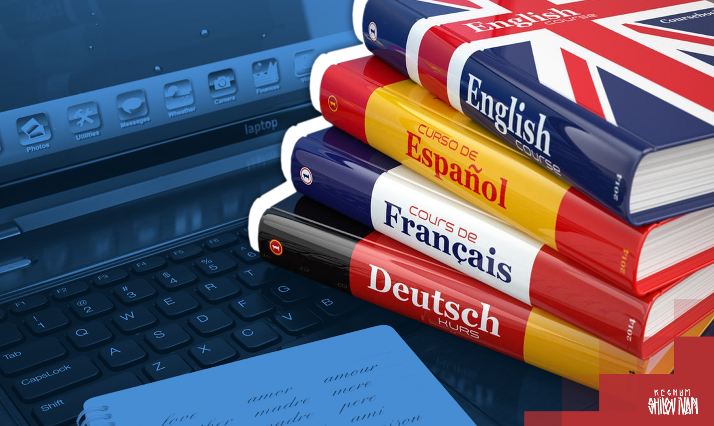
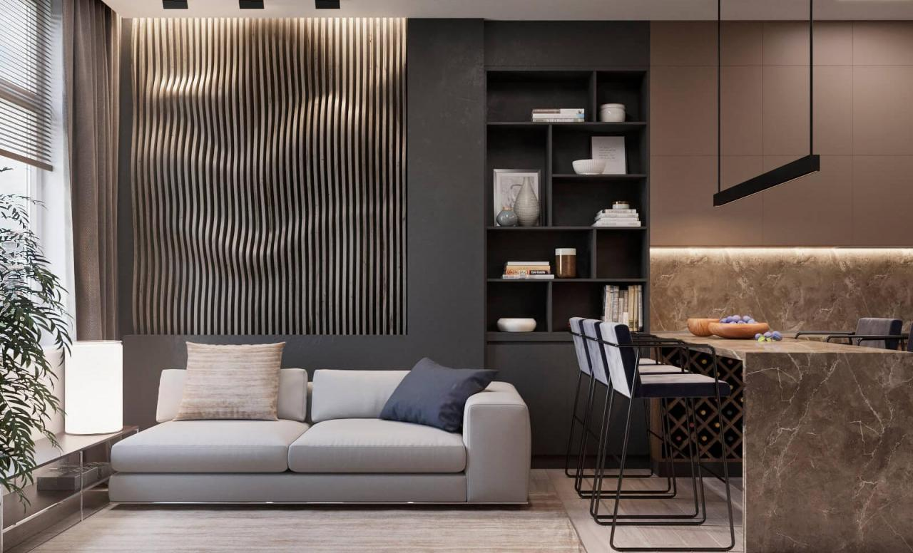
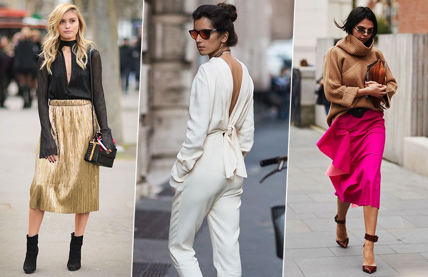

Мой блог
Моя биография
Родилась 22 июня 2000го года в городе Запорожье. Отучилась 4 первых класса в школе №7, затем перешла гимназию №6, где проучилась до 8го класса. В это время я начала интересоваться изучением языков, литературы и истории. Занималась бальными танцами 4 года.
В 2014м году я перешла в лицей "Перспектива", где я поняла, что мне интересна математика, тогда я поступила в "ШАГ", тогда я решила перейти с изучения гумманитарных наук на изучение математики и программирвоания. Участвовала в олимпиадах по истори и правоведению, где занимала призовые места.
В 2015м году я перешла в колледж, откуда через пару месяцев ушла обратно в лицей. Там тоже участовала в олимпиадах, но по программированию. Параллельно изучала немецкий.
В 2017м году я окончила школу и сдала ЗНО по украинскому, английскому и математике, в результате поступила в ЗНУ на программиста на бюджета.
В 2019м году сдала немецкий на уровень B2.
Моя семья
-

Мама
Алина Остапенко
-

Папа
Андрей Селиванов
-

Cестра
Эмилия Селиванова
Мои хобби

Чтение
Главное — не научиться читать. Гораздо важнее научиться сомневаться в прочитанном.
Джордж Карлин- 
Изучение языков
Мы все одноязыки, что не ново,
Гамзат Цадаса
Но по два уха каждому дано
Лишь для того, чтоб, выслушав два слова,
В ответ произносили мы одно. 
Программирование
Хакерство — это искусство. У художника есть идея, краски, холст и кисти. А у меня — компьютер и языки программирования.
Пауль Циглер- 
Дизайн
Хороший дизайн виден сразу. Отличный дизайн незаметен.
Джо Спарано - 
Мода
Мода — это управляемая эпидемия.
Джордж Бернард Шоу